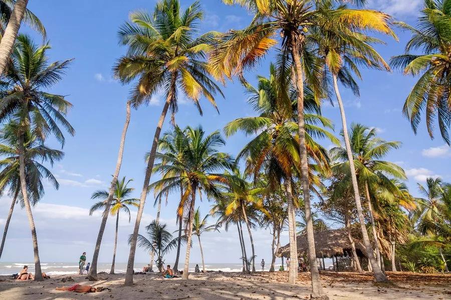
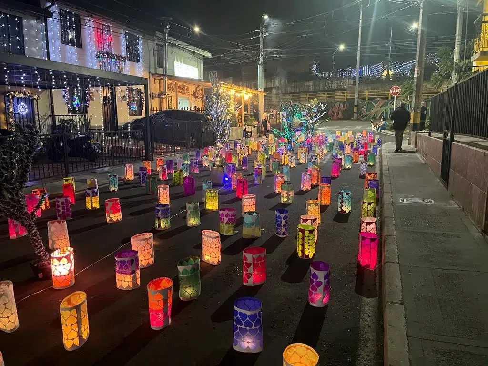
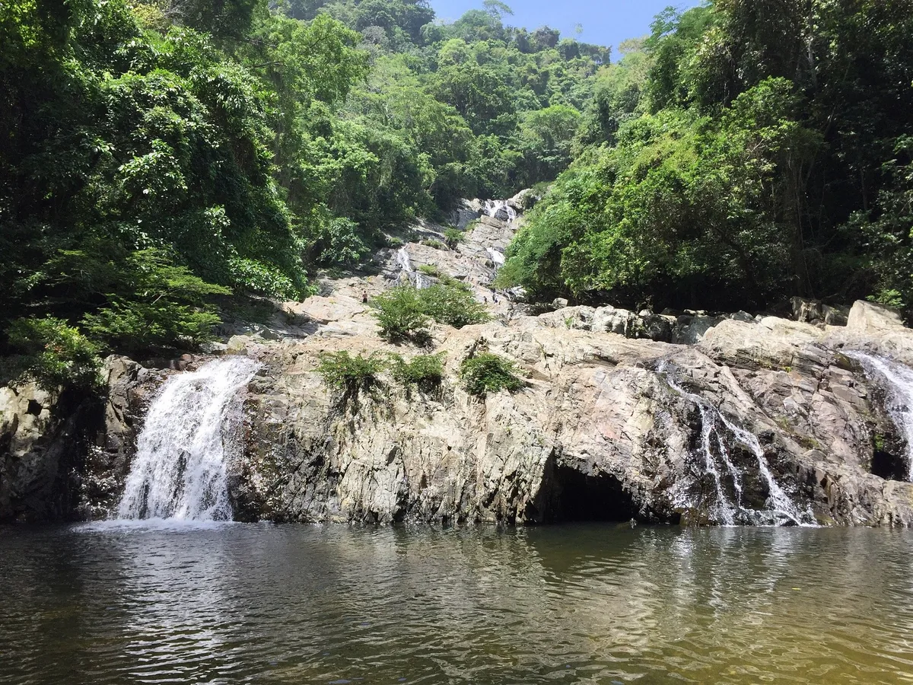

Dag 18–21 · Rustig Caribisch Strandleven · Tubing · Surfen
Een korte en gemakkelijke rit van Tayrona naar het rustige strandleven van Palomino. Vertrekken na ontbijt — geen haast. Check met het Quetzal Dorado Eco-Lodge voor het beste vervoer.
📖 Lees meer: 🛶 Tubing → 📖 Lees meer: 🏖️ Strand → 📖 Lees meer: 🏄 Surfen →De klassieker van Palomino in de lange versie: een gids haalt je met de motor op aan het hotel, je wandelt ±3 uur door het bos de Sierra in naar Seviaka (ook Sewiaka of Seywiaka), een Kogi-gemeenschap aan de rivier, waar de mamo vertelt over medicinale planten, geloof en gebruiken. Daarna drijf je op een binnenband de Río Palomino af tot aan de zee: rustige stukken en kleine stroomversnellingen.
Gran Colombia Tours: vanuit Palomino ±US$71 p.p. (±6 uur), met ophaling per motor aan het hotel, band, reddingsvest, verzekering en toegang tot Seviaka. 4,8 op GetYourGuide over 17 reviews. Gratis annuleren tot 24 uur vooraf.
To'Buru Tours (in Palomino zelf): halve dag van 5 uur, privévervoer, gids in Engels of Spaans, max. 8 personen, gratis annuleren tot 24 uur vooraf; 4,7 op Tripadvisor over 24 reviews. Prijs op aanvraag.
Of via de receptie van Casa del Pavo Real of Tour Adventure Palomino (tochten van 3, 4 en 5 uur).
Lang weekend: 7 en 8 december zijn feestdagen, dus de dag ervoor of online vastleggen.
Een korte kroegentocht langs de strandbars van Palomino, op wandelafstand van het hotel: alle adressen liggen binnen ±350 m van elkaar op het strand, je wandelt in totaal ±1,3 km. Richting het westen, dus je loopt de zonsondergang tegemoet. Geen zin? Dan is er happy hour (2-voor-1) in het eigen hotel van 17 tot 19u.
Praktisch: afstanden zijn hemelsbreed tussen de adressen op Google Maps; over het zand reken je ±70 m per minuut. Na donker zijn de straatjes terug naar het hotel onverlicht en soms modderig: neem een zaklamp of een mototaxi. Happy-hour-uren verschillen per zaak en seizoen, dus vraag ernaar. Stops in het vet zijn de oorspronkelijke tip van Lonely Planet.
December is windseizoen: golven tot 2–3 m en een verraderlijke muistroom. Als beginner neem je dus een les in plaats van zelf een board te huren, en je gaat vroeg, als de zee het vlakst is. De scholen zitten direct op het strand; vastleggen op dag 18 (lang weekend).
Groepsles ±COP 100.000–120.000 p.p. (≈€28–33), ±2 uur, board inbegrepen · privéles ±COP 150.000 (≈€42).
• Tide Escuela de Surf — 5,0 op Tripadvisor (18 reviews) · Instagram
• Palomino Surf & Bodyboard School — 4,5 op Tripadvisor (8 reviews), dagelijks 7–18u
• Palomino Sunset Surf School · Palomino Surf Club (Instagram)
• Surf by José: privéles vanuit het Makao Beach Hotel
• Of via de receptie van Casa del Pavo Real
👨🦳 Sluit de dag af zoals Tony: een glas aguardiente aan het strand. De nationale anijsdrank van Colombia — koud, simpel, perfect bij zonsondergang op het Caribisch zand.

Wandel langs het strand naar de monding van de Río San Salvador, waar een heldere rivier in zee stroomt, met de Sierra op de achtergrond, een paar surfers en bijna geen toeristen. Je kan er zwemmen in zoet en zout water.
Hoe ver: ±3 km enkel vanaf het hotel (450 m naar het strand, dan ±2,6 km oostwaarts) · ±40–45 min wandelen, heen en terug ±1u30. Het strand is door erosie op stukken smal, dus soms door het zand achter de waterlijn.
Rondje: heen langs het strand (±45 min), terug ±10 min te voet door een beschermd mangrovebos met brulapen naar hostel Jaba Jan, en daar een mototaxi terug naar het hotel (±COP 7.000 (≈€1,9) p.p.). Vertrek begin namiddag (weinig schaduw) en wees vóór ±17:45 terug voor de Velitas. Alternatief: met de kajak vanaf Jaba Jan de rivier af.
Meenemen: water en iets te eten; er staan soms locals met eten, maar reken er niet op. Afval terug mee.
📍 Monding Río San Salvador · 4,9 op Google (312 reviews)

Vanavond zet heel Colombia kaarsen en papieren lampionnen buiten — op stoepen, muurtjes en hier ook op het strand. Het is de onofficiële start van de kerstperiode en voor veel Colombianen de mooiste avond van het jaar. Jullie zitten er toevallig precies in. Koop zelf een setje kaarsen in de tienda en zet ze bij je posada buiten.
📖 Lees meer over Día de las Velitas →Je laatste volle dag aan zee, en meteen een officiële feestdag: Inmaculada Concepción. Half Colombia is vrij en trekt naar de kust, dus het wordt drukker dan je gewend bent in Palomino. Surfles, een strandwandeling naar de monding van de Río San Salvador, of gewoon een hangmat.
Vervoer regelen: dag 22 reis je naar Santa Marta en vlieg je naar Bogotá. Rond een feestdag zitten bussen en collectivo's voller. Vraag je accommodatie vandaag al om een plek te reserveren of een taxi te regelen. Casa del Pavo Real rijdt zelf naar Santa Marta voor COP 265.000 (≈€74); vraag of dat tot aan de luchthaven SMR is.
Zwemmen: de stroming voor Palomino is verraderlijk. Blijf bij de plekken waar locals het water in gaan en ga niet ver uit de kust.
De luchthaven Simón Bolívar (SMR) ligt ±90 km verder, aan de andere kant van Santa Marta: reken 1u30 tot 2 uur met de auto. Je vliegt met JetSMART JA5171 om 14:42 naar Bogotá (geboekt, €283,69 voor twee), dus wil je rond 13:15 op de luchthaven zijn. Vertrek uiterlijk 11:30 uit Palomino. Je bent al op dag 22 in Bogotá — dag 23 is een vrije dag!
| Vervoer | Prijs (samen) | Duur · opmerking |
|---|---|---|
| ⭐ Hoteltransport Casa del Pavo Real | COP 265.000 (≈€74) | ±1u45 · deur tot deur · vragen of het tot SMR rijdt |
| Uber | ±COP 240.000–275.000 (≈€67–76) | Zelfde prijsklasse · in Palomino weinig chauffeurs en niet elke chauffeur rijdt buiten Santa Marta |
| Taxi | ±COP 150.000–275.000 (≈€42–76) | Oudere reizigersprijzen; vooraf afspreken |
| Bus + taxi | ±COP 30.000–45.000 (≈€8,3–12) + taxi naar SMR | ±3 uur · bus van de hoofdweg naar Santa Marta, daar taxi · vertrek ±09:30 · krap met bagage |
Advies: het hoteltransport, als het tot aan de luchthaven gaat. Het kost even veel als Uber en je bent zeker van een wagen op tijd voor een vlucht om 14:42. Regel het op dag 21 aan de receptie.
Vier nachten is ruim voor één strandstraat. Niets hiervan staat ingepland; kies ter plaatse naargelang zin en weer. Bron: Lonely Planet 2023 en Rough Guide 2024.

Een reeks watervallen met natuurlijke zwemgaten, 20 minuten wandelen vanaf de kustweg, pal op de route van Tayrona naar Palomino. Bus eruit, zwemmen, de volgende bus verder — geen omweg.
Hoe: vraag de buschauffeur te stoppen bij "Quebrada Valencia" (±20 min voorbij El Zaíno). Het pad begint aan de weg; met bagage is dat lastig — laat de rugzakken in de lodge of plan het als aparte halve dag vanuit Palomino (±30 min bus).
Beste moment: ochtend, voor de dagjesmensen uit Santa Marta.
Een uur oostwaarts langs de kust: van oktober tot maart zitten duizenden roze flamingo's in de ondiepe lagunes van het reservaat. Een lokale visser vaart je in een cayuco (kano zonder motor) tot vlak bij de vogels; ook lepelaars, ibissen en fregatvogels.
Hoe: bus Palomino → Riohacha, uitstappen in Camarones, mototaxi naar de lagune. Terug idem; laatste bussen tot ±18u.
Let op: dag 21 is een feestdag — drukker verkeer op de kustweg. Vroeg vertrekken (7u) en tegen de middag terug.
Eten: gegrilde vis op Playa de Camarones na de tocht.
Hetzelfde traject als het tubing, maar met een peddel: van de jungle tot aan de monding, met kans op otters en brulapen langs de oever. Rustiger alternatief voor wie tubing te traag vindt.
Palomino heeft drie scholen met instructeurs erkend door de Colombiaanse surffederatie: Palomino Surf & Bodyboard School, Tide Escuela de Surf en Surf by José. December is windseizoen met de grootste golven (2–3 m) — als beginner ga je vroeg, als de zee nog vlak is.
Ochtendyoga bij meerdere hostels (drop-in), of in ons eigen hotel elke dag om 8:30 (COP 50.000 (≈€14), CORA Temple); two-for-one cocktails bij zonsondergang bij Finca Escondida, en Tiki Hut aan Playa Donaires voor de avond. Het "hippie-chic" Palomino uit Lonely Planet.
Palomino ligt waar de rivier de grens vormt tussen de departementen Magdalena en La Guajira. Na jaren van paramilitair geweld groeide het dorpje van ±5.000 inwoners uit tot de "backpackershoofdstad" van de kust, met een honderdtal hostels. Het bijzondere: bij helder weer (vooral vroeg) zie je vanaf het strand de besneeuwde toppen van de Sierra Nevada achter de golven.
De Rough Guide waarschuwt: door de muistroom is zwemmen gevaarlijk. Surfen: de grootste golven (2–3 m) komen in het windseizoen december–februari, oktober en mei zijn het rustigst. Begin december worden de golven dus groter — reden te meer voor een les (zie de optionele surfles hierboven).
Leuk verhaal: José Chirino van Surf by José geeft privéles van 2 u (±COP 150.000 (≈€42)) vanuit het Makao Beach Hotel en leert dorpskinderen gratis surfen — "surfen om hen waarden bij te brengen".
• Tour Adventure Palomino heeft tochten van 3, 4 en 5 uur; de langste combineert tubing met een wandeling van 3 uur naar Sewiaka, een Kogi-dorp aan de rivier, waar je de mamo ontmoet.
• Op het zandstrand van Caracolí: zwemmen en een touwschommel in een boom.
• In het droge seizoen (dec–feb) staat het water soms laag en moet je stukjes lopen.
• Waterschoenen met grip, hoed, en wat cash voor bier en snacks van locals onderweg.
Start bij Finca Escondida (twee voor de prijs van één) → Playa La Ola voor hun drankje met lulo, rum en munt → eindigen bij Beach by Selina op de schommels aan de bar.
• Probeer ceviche van koraalduivel (pez león) — een invasieve soort, dus opeten helpt het rif.
• SUÁ (aan de hoofdweg): biologisch en lokaal; zeebaars of koraalduivel in kokossaus "subliem".
• Tanko's (Playa Donaires): Australisch-Colombiaans, "arepizza's" met peer en spek.
De Rough Guide over de kust: in december en januari eerst boeken — prijzen kunnen verdubbelen. Met Velitas en de feestdag van 8 december valt jullie verblijf midden in die drukte. ✅ Geboekt sinds begin november; gratis annuleren tot 1 dec.
De mochila is een symbool van Colombia. De gegeerde wollen versies in grijs, zwart, beige en bruin worden door Arhuaco-vrouwen in de Sierra gemaakt; elke tas zou de gedachten van de weefster in zich dragen, de patronen zijn op de natuur geïnspireerd. De kleurrijke katoenen tassen met kwastjes zijn van de Wayuu uit La Guajira — zij leerden weven van de magische spin Walekerü. Koop waar het kan rechtstreeks: het is een belangrijke inkomstenbron.
Accordeonmuziek uit Valledupar, achter de Sierra, sinds 2015 UNESCO-erfgoed. Accordeon + caja (Afrikaanse trom) + guacharaca (inheems geribbeld ritme-instrument). Vier ritmes: son (traag, melancholisch), paseo, merengue en puya (snel en wild). De teksten vertellen verhalen over liefde, verlies en het dorpsleven.
Legende: accordeonist Francisco el Hombre versloeg de duivel in een muziekduel door het Credo achterstevoren te spelen. García Márquez noemde Honderd jaar eenzaamheid "een vallenato van 400 pagina's". Luistertip: La gota fría (1938), in 1994 een wereldhit voor Carlos Vives.
Geboorteplaats van García Márquez, 1u30 met de bus vanaf Santa Marta. Het huis van zijn grootouders, waar hij tot zijn achtste woonde, is nagebouwd als Casa Museo (gratis); overal hangen gele vlinders. Te ver voor deze reis, maar een fijn weetje als je Honderd jaar eenzaamheid leest.
Twaalf kilometer oostwaarts, aan een beboste rivier zonder strand. Veel rustiger dan Palomino. Riverside House regelt rafting of kajak naar zee (otters en brulapen) en wandelingen van ±4 u naar Kogi-dorpen (niet nodig: Seviaka zit al in de tubing van dag 19).
Voorbij Palomino verdwijnen de bergen en begint de woestijn van de Wayuu, het grootste inheemse volk van Colombia: roze zoutvlaktes van Manaure, Cabo de la Vela en de duinen van Taroa aan het noordelijkste punt van Zuid-Amerika. Voor een volgende reis. Weetje: kinderen in Alta Guajira zetten soms een touw over de weg als "snoeptaks" — geef liever rijst of brood dan snoep.
Bron: Lonely Planet Colombia (2023) en The Rough Guide to Colombia (2024), vertaald en samengevat. Prijzen, uren en sluitingen kunnen intussen veranderd zijn.